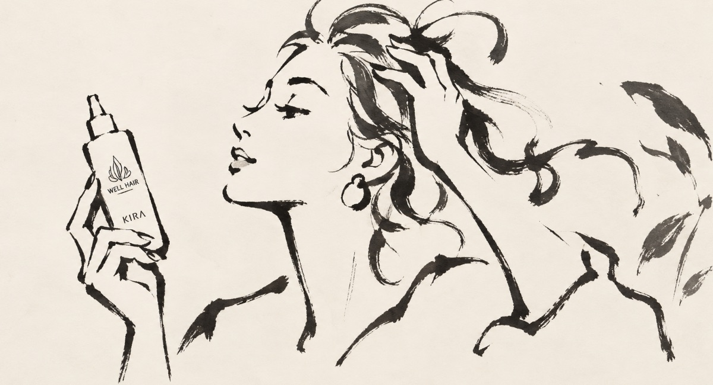

Hair & Scalp Beauty Check
約2分
✦ 大人の髪・頭皮 9問セルフ診断
毛先だけではわからない、
今の髪のサイン。
気づいている悩みだけでなく、回答全体から「まだ自分では気づいていないケアポイント」を見つけます。

TITLE IMAGE
1200 × 650px 推奨
1200 × 650px 推奨
全9問
あなた専用ケア
シェアOK
約2分。髪と頭皮の4つのサインを、低め・中程度・高めでわかりやすく表示します。
1 / 9
QUESTION 1
BEAUTY CHECK
回答から、隠れたサインを整理しています…
パサつき・ダメージ・頭皮・根元の4方向から見ています。
回答全体から見えた、あなたの診断結果
あなたが一番気になっていること
これから髪に求めていること
RESULT IMAGE / 1200 × 675px 推奨
4つのサイン
低め
中程度
高め
高いほど、回答の中でそのサインが多く重なっているという意味です。「ケアができている度合い」ではありません。
診断から見えたこと
YOUR CARE PICKS
あなたに合うケア候補
「一番気になること」と、診断で見つかったサインの両方から、始めやすいものに絞っています。
使う順番
毎日の流れに入れやすい順番でまとめました。
1分の頭皮セルフケア
頭皮をやさしくほぐすケア。指の腹で、小さく動かしながら頭頂部へ。
01 前頭部
おでこの生え際から、指の腹で小刻みにほぐしながら頭頂部へ。
02 側頭部
こめかみ周辺から、やさしく小刻みに動かしながら頭頂部へ。
03 後頭部
首の付け根から後頭部をほぐし、少しずつ頭頂部へ。
この診断は美容上のセルフケアの目安を楽しむためのもので、医療上の診断ではありません。 頭皮や髪に強い症状や急な変化がある場合は、適切な専門家へご相談ください。